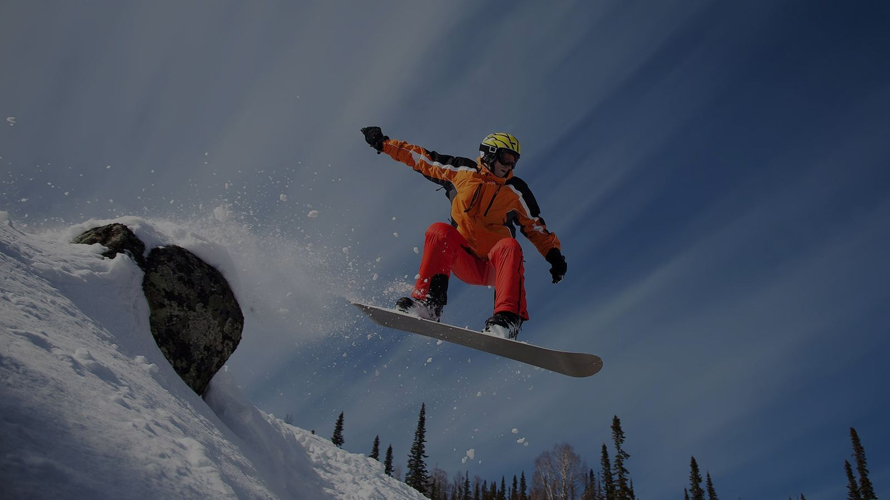

Курорт
Сорочаны
10 трассподъёмники до 5000 чел/чассезон ноябрь — середина апрелякатокдетский склон
Горнолыжный курорт «Сорочаны» разместился в Дмитровском районе Подмосковья. Местные склоны имеют высоту более 220 м над уровнем моря и оборудованы современными австрийскими и итальянскими подъёмниками: 2- и 4-местные кресельные дороги, бугели и беби-лифты для сноутюбинга. В течение всего сезона ратраки поддерживают в идеальном состоянии 10 трасс, работает освещение, а система искусственного оснежения продлевает сезон с ноября до середины апреля. Для детей — игровая комната и специальный учебный склон с игровой площадкой.
Как добраться: Дмитровское шоссе, около 49 км от МКАД; от ZSKI — 10–15 минут на машине.